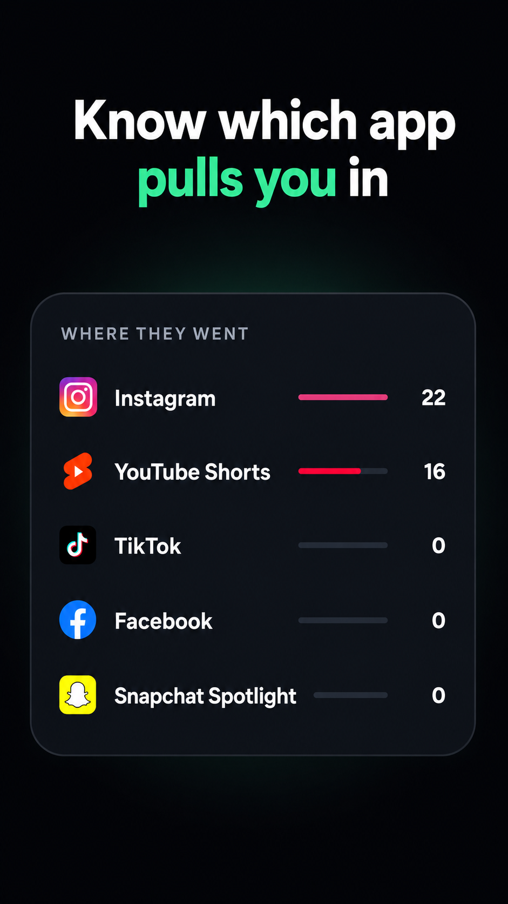

How to Block YouTube Shorts on Android (2026 Guide)
Quick answer: YouTube has no permanent "turn off Shorts" switch. You can hide the Shorts shelf for ~30 days or set a soft daily limit — but to actually block the Shorts feed on Android while keeping normal videos, you need a feed-level blocker like ShieldBrain.
What is the YouTube Shorts feed?
YouTube Shorts is YouTube's short-form vertical video feed: videos up to a few minutes long that autoplay one after another as you swipe up. Like TikTok's For You page and Instagram Reels, the Shorts feed is algorithmically infinite — there is no end, no stopping cue, and each swipe delivers a fresh dopamine hit. That design is why a "quick look" at Shorts routinely turns into an hour.
Why block Shorts but keep YouTube?
For most people YouTube itself is useful — tutorials, lectures, music, long-form content you chose to watch. The problem is only the Shorts feed, which replaces intentional watching with passive swiping. Deleting the whole app throws out the useful part; blocking only the Shorts feed removes the trap and keeps the tool.
Method 1: Hide the Shorts shelf inside YouTube (temporary)
- Open the YouTube app on Android.
- On the Home tab, find the Shorts shelf.
- Tap the ⋮ (three-dot) menu on the shelf and choose Not interested.
Limitations: the shelf returns after roughly 30 days, the Shorts tab stays in the navigation bar, and tapping any Short still opens the endless feed. This reduces temptation; it does not block anything.
Method 2: YouTube's built-in Shorts time limit (soft)
- In YouTube, tap your profile picture → Settings → General.
- Look for the option to set a daily Shorts time limit (rolling out on Android).
- Pick a limit — YouTube shows a reminder when you pass it.
Limitations: it's a dismissible reminder, not a block. One tap and you keep scrolling.
Method 3: Block the Shorts feed with ShieldBrain (permanent, reversible)
ShieldBrain is a free Android Shorts blocker that detects when the Shorts feed opens and blocks it instantly — while the rest of YouTube keeps working.
- Install ShieldBrain from Google Play.
- Enable the Accessibility Service when prompted. This one-time Android permission is how ShieldBrain recognises the Shorts feed; it is used for nothing else and no data leaves your phone.
- Toggle "Block YouTube Shorts" ON. From now on, opening Shorts shows a block screen instead of the feed. Normal videos play as usual.
Before you block, ShieldBrain can also count how many Shorts you watch per day, so you can see the problem's real size first. Many users run the counter for a week, get their wake-up-call number, then flip the block on. See how many reels and Shorts do you actually watch?

Tips for making the block stick
- Count first, block second. Seeing "16 Shorts before breakfast" builds real motivation.
- Block all five platforms at once — if Shorts is blocked but Instagram Reels isn't, the habit just migrates. ShieldBrain covers Instagram Reels, TikTok and Facebook Reels & Snapchat Spotlight too.
- Replace the trigger. Shorts usually fills micro-boredom (queues, breaks). Put a book, podcast or language app where the habit used to be.
- Review your Trends weekly. Watching the bar chart drop is its own reward.
Common mistakes
- Relying on "Not interested". It hides one shelf for a month; the feed is still one tap away.
- Blocking the whole YouTube app. You'll unblock it the first time you need a tutorial — and the Shorts feed comes back with it.
- Going by willpower. The feed is engineered by teams of engineers to defeat willpower. Use structural friction instead.
FAQ
Can I block YouTube Shorts without blocking YouTube?
Yes. ShieldBrain blocks only the Shorts feed. Normal videos, subscriptions, search and comments keep working exactly as before.
Can Shorts be turned off permanently inside the YouTube app?
No. YouTube only offers a ~30-day shelf hide and a dismissible time-limit reminder. A permanent block requires a third-party blocker like ShieldBrain.
Does blocking Shorts affect normal videos?
No. ShieldBrain detects specifically the vertical-swipe Shorts feed; long-form videos and playlists are untouched.
Is there a free YouTube Shorts blocker for Android?
Yes — ShieldBrain is free, runs entirely on-device, needs no account, and also counts every Short you watch.
Block YouTube Shorts today
ShieldBrain counts every Short you scroll and blocks the feed with one tap — free, private, Android.
Get ShieldBrain on Google PlayRelated guides: Block Instagram Reels · Block TikTok scrolling · Stop doomscrolling · Reduce screen time on Android